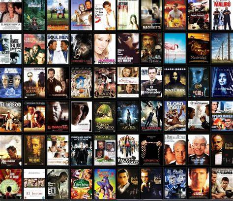

¡TE DAMOS LA BIENVENIDO EN RESEÑAS WEB!
Este sitio nace con el propósito de ayudarte en la búsqueda de lo mejor en el mundo del entretenimiento. Sabemos que, a veces, con tantas
opciones disponibles, puede llegar a ser abrumador decidir qué ver, leer o jugar. Por eso, nos dedicamos a explorar y analizar las últimas
novedades que nos rodean, para que puedas tomar decisiones informadas, disfrutar tu tiempo libre y evitar malas experiencias.
NUESTRO COMPROMISO
Nuestro compromiso es ayudarte a aprovechar al máximo tu tiempo libre y evitar experiencias decepcionantes. Creemos que el entretenimiento
debe ser fuente de entusiasmo y satisfacción, y por eso estamos aquí: para hacer que tu búsqueda sea más fácil.
Nuestras reseñas son el resultado de un análisis cuidadoso y, sobre todo, objetivo. Nos esforzamos por ofrecerte opiniones honestas que reflejen
la calidad y el contenido de cada obra. Queremos que tengas la confianza de que nuestras recomendaciones están basadas de manera justa, para que
puedas disfrutar la mejor experiencia. ¡Explora, descubre y disfruta!
Así que, si estás listo para entrar en un mundo de historias, tramas y aventuras emocionantes, explora nuestras reseñas y déjate llevar por nuestras
recomendaciones.¡únete a Reseñas en la Web y descubre el mundo del entretenimiento!
EXPLORA NUESTRAS CATEGORÍAS
LIBROS
Navega en un mundo de historias fascinantes. Nuestra sección de libros incluye reseñas de novelas, ensayos, cuentos y más obras de distintos
géneros. Desde literaturas clásicas hasta las últimas publicaciones contemporáneas, ya sea que busques una historia conmovedora y triste,
emocionante o una obra que te inspire, aquí encontrarás recomendaciones que te ayudarán a elegir la lectura perfecta para cada momento del día.
¡En cada página de un libro, hay un universo por descubrir!
VER RESEÑAS DE LIBROS
PELÍCULAS

Descubre el arte del cine a través de nuestras reseñas de películas. Desde los grandes éxitos de taquilla hasta las joyas del cine independiente,
analizamos una variedad de géneros y estilos. Nosotros te ofrecemos información sobre las actuaciones, la trama y más, para que puedas decidir
qué película ver en tu próxima noche de cine.¡Prepárate para disfrutar de historias que te harán reír, llorar, enojar y reflexionar!
VER RESEÑAS DE PELÍCULAS
VIDEOJUEGOS
Sumérgete en el apasionante mundo de los videojuegos con nuestras reseñas detalladas. En esta sección, exploramos una amplia gama de títulos,
desde los más recientes lanzamientos hasta los clásicos que han dejado huella en la industria. Ya seas un jugador casual o un experto en busca
de desafíos, aquí encontrarás algo que se adapte a tus gustos. Te ayudamos a descubrir aventuras épicas, mundos abiertos llenos de exploración
y experiencias multijugador que te conectarán con amigos y jugadores de todo el mundo.¡Prepárate para encender tu consola y sumergirte horas
de diversión y adrenalina!
VER RESEÑAS DE VIDEOJUEGOS
¿POR QUÉ EXPLORAR NUESTRAS CATEGORÍAS?
Cada categoría que presentamos en nuestro sitio, esta diseñada para sastifacer tus gustos y preferencias.
Sea una lectura que te envuelva, una película que te haga sentir mil emociones o un videojuego que desafíe tus
habilidades, tenemos algo interesante para todos, sin importar la edad.
RECUERDA: RESEÑAS EN LA WEB - SIEMRE CONECTADA